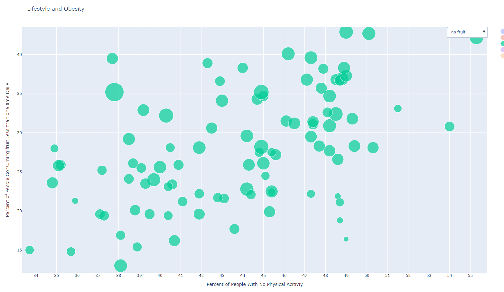
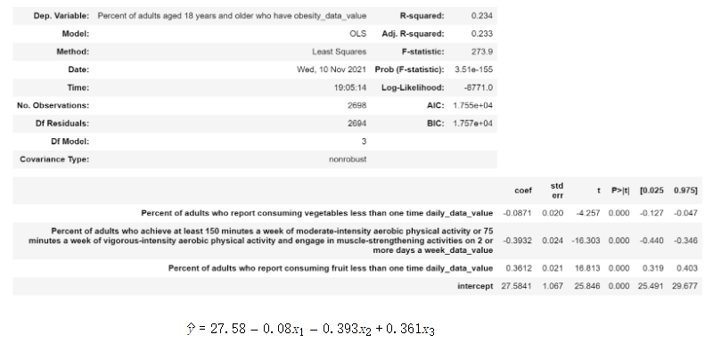

The idea that eating fruit and vegetables, doing exercise and so on is good for your health has become some sort of common sense. No one will deny that our personal behaviors do have help on our health for preventing from obesity and diabetes more or less. But how do we quantify their impact on our health? Here is our attempt to figure it out.
First, we propose two hypothesis:
Null hypothesis: There is no association between vegetable, fruit consumption, and obesity rate.
Alternative hypothesis: There is an association between vegetable, fruit consumption, and obesity rate.
To verify the hypothesis, we choose the Linear Regression Model. Besides, we also train SVM, Naive Bayes and KNN models on the data. SVM and KNN are suitable for such continuous variables while Naive Bayes can also be used if we divide the variables into different bins.
We train models using U.S. community survey data sets. At the same time, to find the relationship between lifestyle and obesity rates, we choose the following three columns: percent of adults who achieve at least 150 minutes a week of moderate-intensity aerobic physical activity or 75 minutes a week of vigorous-intensity aerobic physical activity and engage in muscle-strengthening activities on 2 or more days a week; percent of adults who report consuming fruit less than one time, consuming vegetables less than one time as the x-axis. For y, we choose the column: percent of adults who have obesity.
After that, we use 10-fold cross-validation to test the accuracy of the algorithm. For each data set, divide the data set into ten, and take turns using 9 of them as training data and 1 as test data for experimentation. Each test will get the corresponding correct rate (or error rate).
After training Linear Regression model on the data, we get the following result:
We can see the R score is 0.234 which is small enough. When coming to the coefficients, the result is kind of complex. For vegetable intake, we find there is no significant influence on obesity (-0.0871), which is quite counter-intuitive. The lower fruit consumption will bring out the high obesity rate. So do the weekly exercises. In general, some of our hypotheses have been proved while some are not. Maybe Eating vegetables could help us become healthy but cannot avoid obesity. Therefore, we cannot reject the null hypothesis.
After cross validation, we have the score: 0.6796.
For the KNN model, the score is not good. We believe that the reason why the KNN score is not high is that the KNN method mainly relies on the limited neighboring samples around, rather than the method of discriminating the class domain to determine the category, and for the three attributes we selected, the intersection between them or There is not much overlap, resulting in a low KNN score. At the same time, our sample size is not high which only has thousands of data and the use of KNN may cause misclassification, and may also lead to a low final score.
After cross validation, we have the score: 0.7154.
Since the Bayesian classifier assumes that the features are independent of each other, and in real life, people with more vegetables may also consume more fruits, so the attributes are not completely independent, which leads to the model's prediction There is a certain loss in accuracy. The Bayesian model also assumes that the feature characteristics meet the Gaussian distribution. In our data, because the amount of data is not large enough, the overall distribution of the data may not meet the Gaussian distribution, which will also bring a certain accuracy loss.